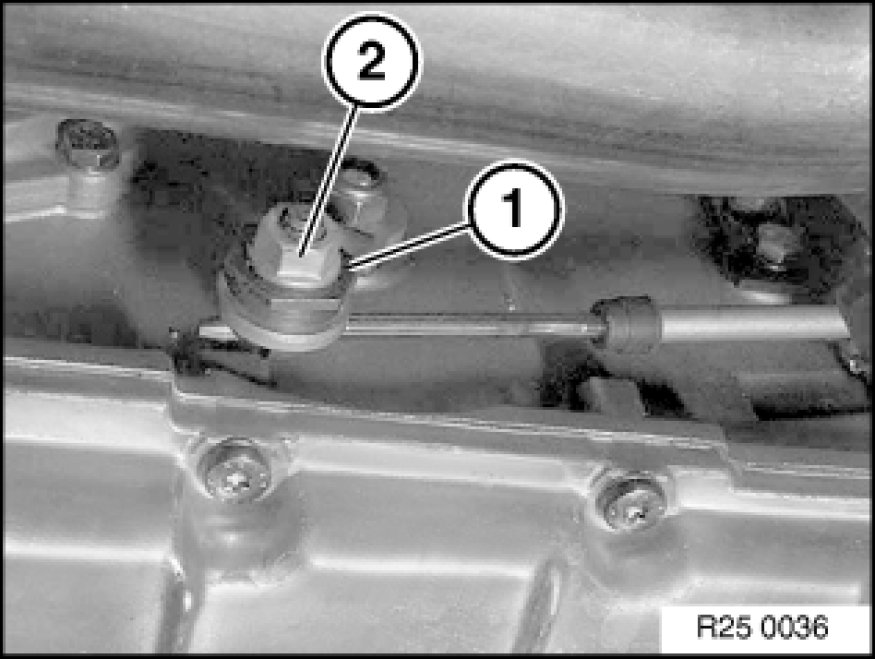
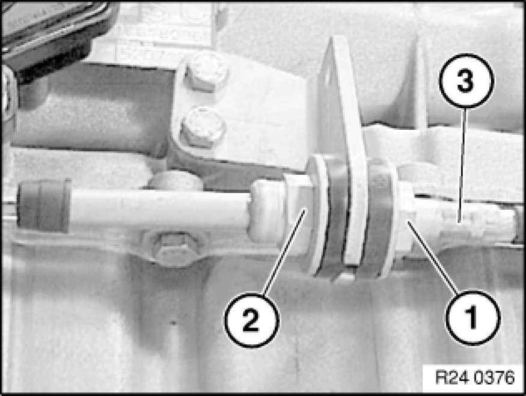
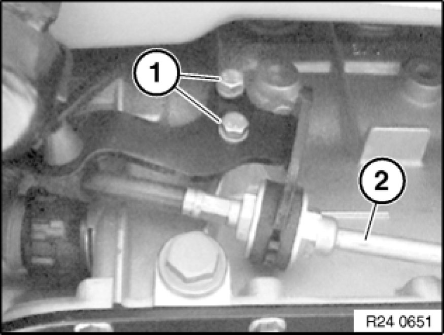
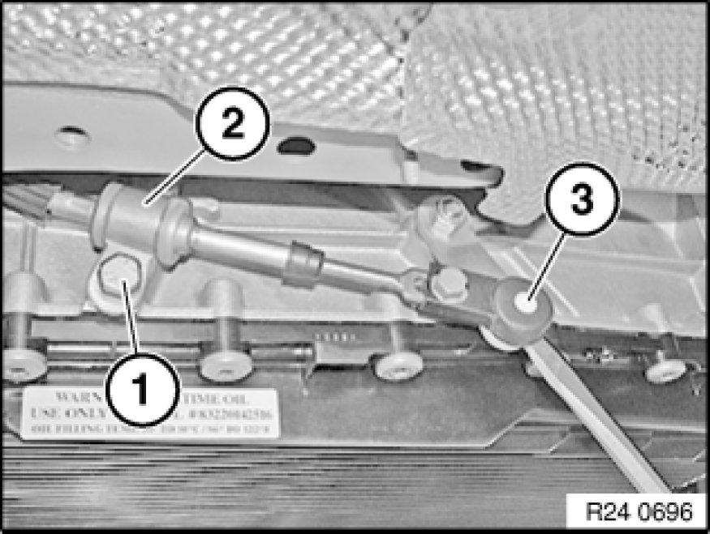
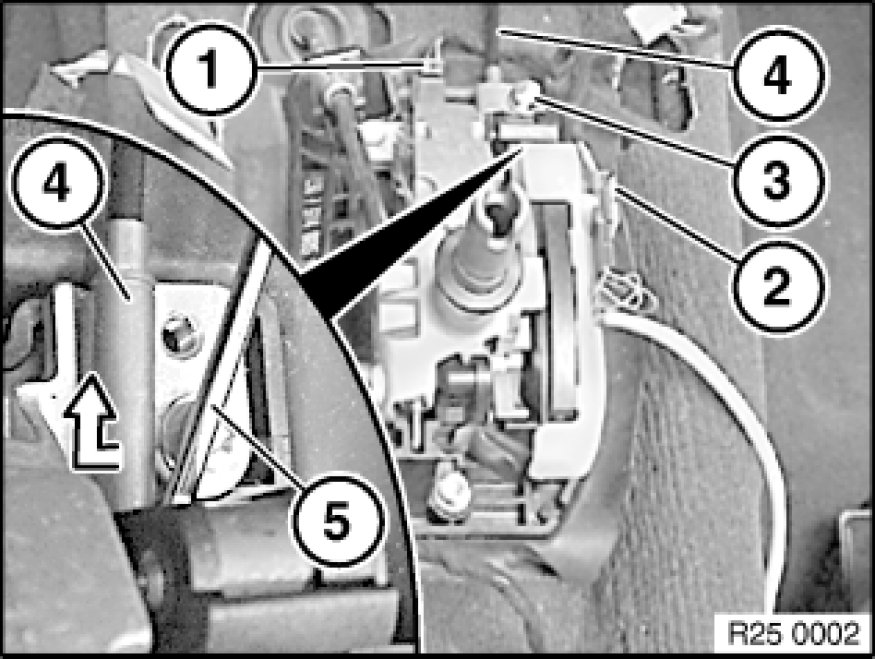
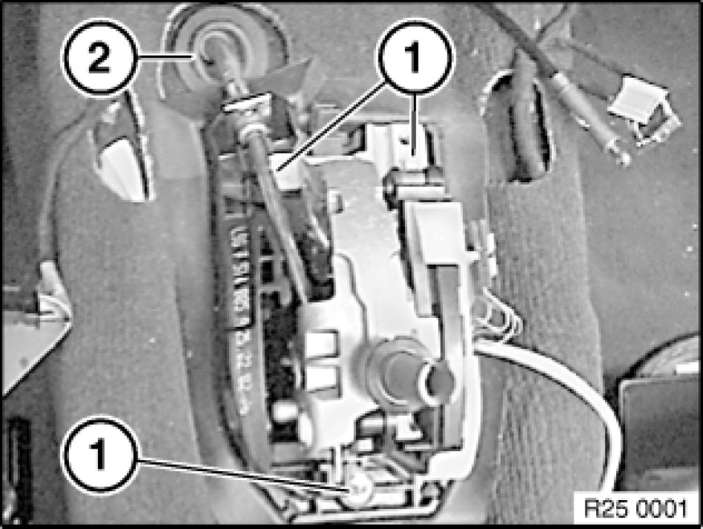
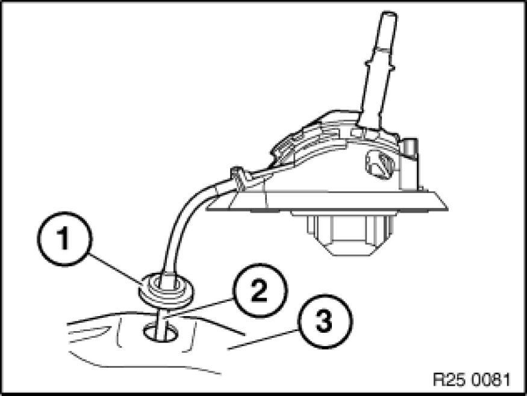

25 16 056 - Removing and installing/replacing shift tower (Steptronic)
25 16 056 - Removing and installing or replacing shift tower (Steptronic)

Necessary preliminary tasks:
- Remove instrument panel trim 51 45 030 Removing and Installing Instrument Panel Trim.

Version 1
Move selector lever to "P" position.
Grip clamping sleeve (1) and slacken nut (2).
Installation:
Adjust selector lever Adjusting Selector Lever (A5S 360R/390R/A4S 200R/6HP26Z/19Z).

Brace cable on hex head (1) and loosen nut (2).
Installation:
Tightening torque 25 16 1AZ. [1][2]Shifter A/T

Release screws (1).
Pull cable (2) out of holder.

Version 2
Move selector lever to" Park".
Release screw (1).
Tightening torque 25 16 6AZ [1][2]Shifter A/T.
Remove clamp (2).
Release shift cable head (3) using a screwdriver from ball head of shift cable lever.
Adjust shift lever.

Disconnect plugs (1 and 2).
Release screw (3).
Tightening torque 25 16 5AZ [1][2]Shifter A/T.
Slide interlock cable (4) down using a screwdriver (5) from shaft of interlock locking pawl towards left.
Installation:
Adjust interlock cable Adjustments and check interlock function.

Release screws (1).
Tightening torque 25 16 3AZ [1][2]Shifter A/T.
Feed sleeve (2) out of body and remove shift tower.

Installation Note:
Insert rubber seal (1) of shift cable (2) in transmission tunnel (3).